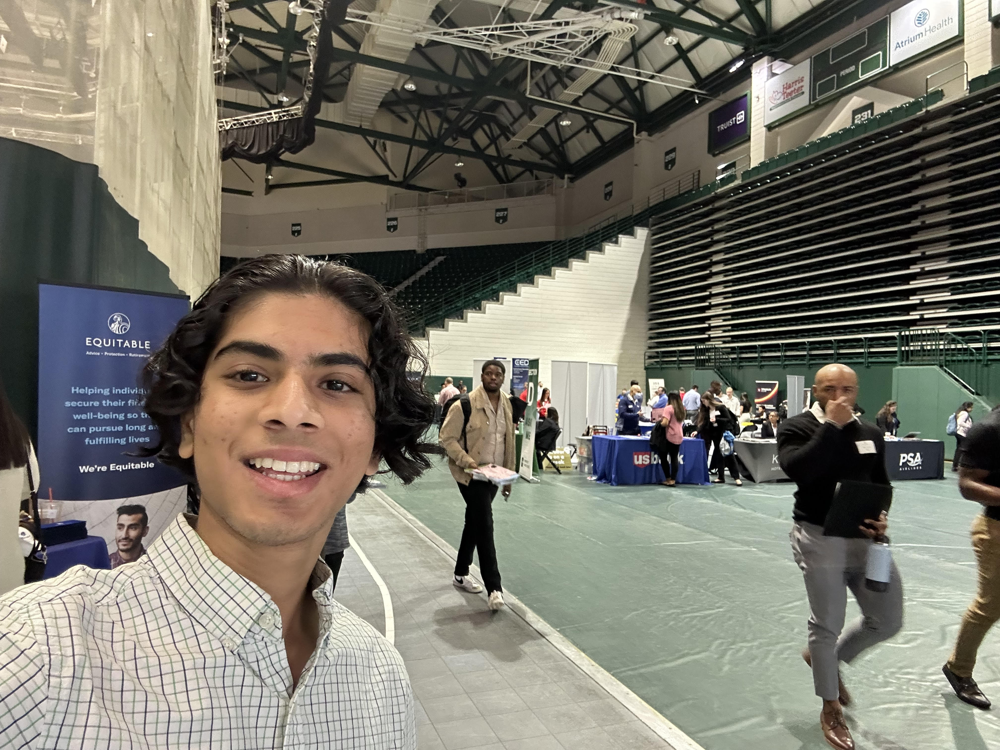

Introduction
Personal Background: Lived in North Carolina basically my whole life. I enjoy programming, so I’m pursuing a bachelors in Computer Science!
Professional Background: I have experience in full stack development. I currently work at Lynkway as a Junior Software Engineer.
Academic Background: I’m currently a junior at UNCC with a major in computer science and a concentration in AI, gaming, and robotics.
Background in this Subject: I have experience in creating web applications but with this class I want to expand my knowledge and learn more!
Primary Computer Platform: Currently use both mac and windows.
Courses I'm Taking & Why:
- STAT 2122 - Intro to Prob & Stat: I have to take it for major
- MATH 2164 - Matrices & Linear Algebra: I have to take it for major
- ITSC 2181 - Introduction to Computer Systems: I have to take it for major
- ITSC 3155 - Software Engineering: I have to take it for major, but I’m interested in learn more about software engineering
- ITIS 3135 - Web-Based Application Design and Development: Elective, and I took it because I’m interested in learning about advanced web development.
Funny/Interesting Item to Remember me by: I’m almost done with one piece, and I hope the live action lives up to the original show…
I'd also like to Share: I also enjoy working out. I’ve been doing it for the past couple years. (yes I have abs)